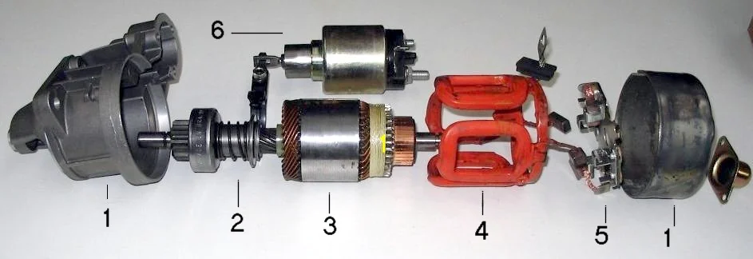

Ремонт стартера
При запуске слышны щелчки или стартер с трудом прокручивает двигатель? Расскажите мастеру, при каких условиях это происходит.
Описать проблему
Ремонтируем агрегаты и продаём запчасти к ним. Уточните по телефону, когда можно приехать и есть ли нужная деталь.
При запуске слышны щелчки или стартер с трудом прокручивает двигатель? Расскажите мастеру, при каких условиях это происходит.
Описать проблему
Загорелся индикатор аккумулятора или пропадает зарядка? Уточните, когда это бывает: сразу после запуска или уже в дороге.
Описать проблемуЕсли нужен отдельный компонент, подготовьте артикул или фото маркировки агрегата. Мастер сможет уточнить совместимость и наличие.
Записать данные детали
Подготовьте короткое описание перед звонком или визитом.
Стоимость и сроки зависят от агрегата, состояния и нужных запчастей. Позвоните мастеру и опишите проблему, чтобы уточнить, когда можно приехать и как узнать цену.
Да, продаём запчасти к стартерам и генераторам. Назовите артикул, если он есть, или подготовьте фото маркировки. Наличие уточняйте по телефону.
Позвоните перед выездом. Мастер скажет, как удобнее принять автомобиль или снятый стартер либо генератор.
Мастерская на втором этаже по адресу: Курск, ул. 50 лет Октября, 177. Вход можно посмотреть на карте. Перед поездкой уточните часы работы по телефону.
В карточке 2ГИС можно посмотреть, где вход, и проложить маршрут.
Позвоните, чтобы уточнить график и договориться о визите.
Отзывы в 2ГИС